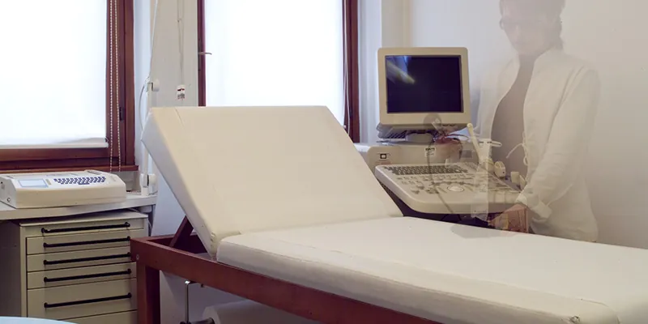

Esami e prestazioni
Diagnostica
9 aree di diagnostica. Scegli l'area per vedere gli esami eseguiti; per un appuntamento chiama la segreteria.

Esami e prestazioni
9 aree di diagnostica. Scegli l'area per vedere gli esami eseguiti; per un appuntamento chiama la segreteria.
